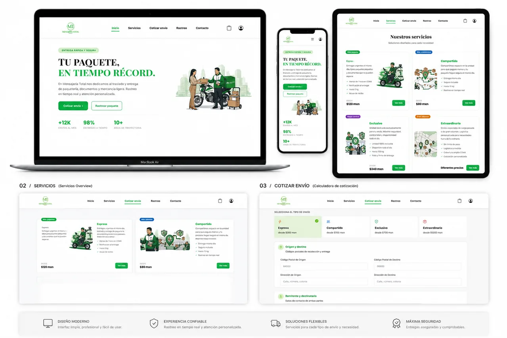

Disponible para posiciones Java Backend / Full Stack Jr.
Jonas Castillo
Java Full Stack Developer enfocado en soluciones reales de negocio
Desarrollo aplicaciones web y automatizaciones que convierten procesos manuales en soluciones digitales confiables. Trabajo con Java 21, Spring Boot, APIs REST, SQL, JavaScript y Python, combinando desarrollo técnico con más de siete años de experiencia en operaciones críticas.
Monterrey, Nuevo León · Disponible para trabajo remoto y reubicación
Java · Spring Boot · SQL
Desarrollo técnico con criterio operativo
SOLUCIONES Y PROYECTOS
Software creado para resolver problemas reales
No presento solamente tecnologías: explico el problema, mi responsabilidad y el resultado de cada solución.
PROYECTO PRINCIPAL · USO INTERNO
Solución utilizada en operación
Calculadora de Servicios Aeroportuarios
Aplicación desarrollada para reemplazar cálculos manuales en Excel, centralizar reglas de negocio y automatizar reportes utilizados en la administración de servicios aeroportuarios.
Problema
El cálculo de servicios requería consultas separadas y registros manuales, aumentando el tiempo de operación y el riesgo de errores.
Solución
Diseñé una aplicación que procesa información de vuelos, consulta parámetros almacenados en SQL, aplica reglas de cobro y genera reportes estructurados en Excel.
Mi responsabilidad
Analicé el proceso, diseñé la base de datos, programé la lógica, integré fuentes de información, validé resultados con usuarios y preparé la solución para su uso interno.
Resultado
La solución fue desarrollada en aproximadamente tres meses, continúa utilizándose y apoya el trabajo de dos personas por turno con reportes para seguimiento de KPIs.
PythonPandasMySQLSQLREST APIExcel
El código y los datos no son públicos por confidencialidad. La representación visual utiliza información ficticia.
Vuelo
XA-JQC
Llegada
14:35
Tipo
Ejecutivo
Aterrizaje$2,450
Plataforma$1,820
Servicios adicionales$980
Total estimado
$5,250 MXN
Datos de vuelo
Python + Pandas
MySQL
Reporte y KPIs

PROYECTO COLABORATIVO · 2026
Syntax Logistics
Full Stack Developer · UI · Integración · Pruebas funcionales
Plataforma web para administrar cotizaciones, usuarios, envíos y seguimiento de paquetes. Participé en funcionalidades backend, operaciones CRUD, integración con MySQL, construcción de interfaz y validación de flujos funcionales.
Contribución
Trabajé en formularios, diseño responsivo, integración frontend-backend, estructura de datos y pruebas de los flujos principales del proyecto.
Funcionalidades
Registro de usuarios, cotización, gestión de destinos y direcciones, seguimiento mediante guía y consumo de servicios REST.
Java 21Spring BootJPA / HibernateMySQLJavaScriptBootstrapPostmanGit
Otros proyectos
Proyectos que complementan mi experiencia en frontend y trabajo colaborativo.

PROYECTO FRONTEND
Mundo Fifas
Sitio temático de fútbol con catálogo, artículos retro, modales interactivos y adaptación responsive desarrollada con HTML, CSS y JavaScript.
HTML5CSS3JavaScript
Ver repositorio
SOBRE MÍ
Desarrollo técnico con entendimiento del negocio
Soy desarrollador Java Full Stack con experiencia práctica construyendo backend, interfaces web, bases de datos y automatizaciones orientadas a resolver necesidades reales.
Antes de dedicarme al desarrollo trabajé durante más de siete años en operaciones aeroportuarias, coordinando procesos críticos, equipos de trabajo, información financiera, KPIs y reglas de negocio. Esa experiencia me permite comprender no solamente cómo programar una solución, sino también cómo debe funcionar dentro de una operación real.
Análisis de procesos
Identifico cuellos de botella, reglas de negocio y oportunidades de automatización.
Ejecución bajo presión
Estoy acostumbrado a priorizar, comunicar y resolver incidencias en operaciones críticas.
Visión de usuario
Construyo pensando en la persona que utilizará la solución y en el proceso que debe mejorar.
EXPERIENCIA PROFESIONAL
Más de siete años resolviendo operaciones complejas
Esta experiencia fortalece mis habilidades para entender requerimientos, priorizar riesgos y entregar soluciones útiles.
Ene 2025 — Abr 2026
Administrador de Servicios Aeroportuarios
GAFSACOMM
Administré cobros, facturación, ingresos y reportes de servicios aeroportuarios. Analicé procesos administrativos y financieros y desarrollé una herramienta en Python y SQL para automatizar cálculos y reportes operativos.
May 2024 — Ene 2025
Oficial de Operaciones
GAFSACOMM
Monitoreé operaciones aeroportuarias, elaboré reportes operativos, coordiné áreas de plataforma, mantenimiento, fauna y proveedores, y participé en capacitaciones de seguridad operacional.
Jul 2018 — Ene 2024
Encargado de Operaciones
Aerolíneas Ejecutivas
Coordiné operaciones de vuelo, atención a clientes, combustible, rampa, mantenimiento y planes de vuelo. Supervisé hasta 23 colaboradores, gestioné KPIs y tomé decisiones en escenarios de alta presión.
STACK TÉCNICO
Tecnologías respaldadas por proyectos
Las habilidades se presentan por área, sin porcentajes arbitrarios.
Backend
Java 21Spring BootSpring WebJPAHibernateJDBCMavenREST APIsPOO
Bases de datos
MySQLPostgreSQLSQLModelado relacionalJOINGROUP BYÍndicesTransacciones
Frontend
HTML5CSS3JavaScriptBootstrapResponsive DesignViteIntegración de APIs
Datos y automatización
PythonPandasExcelConsumo de APIsProcesamiento de datosReportes automatizados
Herramientas y metodología
GitGitHubDockerPostmanIntelliJ IDEAVS CodeUbuntuJiraFigmaScrumJUnit básico
FORMACIÓN Y CERTIFICACIONES
Preparación técnica y conocimiento operativo
Java Full Stack Developer
AIFYC Institute Texas
Bootcamp Desarrollador Java Full Stack Jr.
Generation México
Análisis y seguimiento de KPIs operativos
Capacitación corporativa
Gestión de Operaciones Aeroportuarias
GAFSACOMM
Inglés — B2 Intermedio
Comunicación profesional intermedia
ABIERTO A OPORTUNIDADES
Llevemos una necesidad real a una solución funcional
Busco mi primera posición dedicada completamente al desarrollo de software como Java Backend o Full Stack Developer. Aporto experiencia desarrollando soluciones aplicadas a procesos reales, conocimiento de negocio y más de siete años trabajando en operaciones críticas.
✓Disponible para trabajo remoto en México
✓Disponible para cambio de residencia
✓Java Backend · Full Stack Jr. · Automatización